| Previous | Table of Contents | Next |
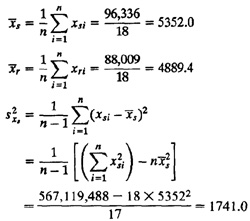
Similarly,
| 462,661,024 - 18 × 4889.42 | ||||
| s2xr | = | = | 1379.5 | |
| 17 |
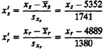
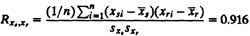
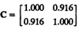
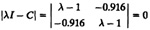
(λ - 1)2 - 0.9162 = 0
Cq1 = λ1q1
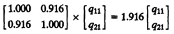
q11 = q21
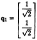
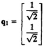
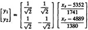
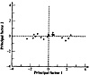
FIGURE 6.3 Packets sent and received data plotted along the principal-component axes.
Sometimes, it is important to have not only the number of service requests of each type but also their order. The next request is generally determined by the last few requests. If it is assumed that the next request depends only on the last request, then the requests follow a Markov model. Actually, the term is used in a more general sense of system states rather than for user requests. That is, if the next system state depends only on the current system state, the system follows a Markov model. Such models are commonly used in queueing analysis and are described in detail in Part VI. For now, it is sufficient to understand that such models can be described by a transition matrix, which gives the probabilities of the next state given the current state. For example, the transition probability matrix for a job’s transition between the CPU, disk, and terminal is shown in Table 6.5. The corresponding state transition diagram is shown in Figure 6.4. After each visit to the CPU, the probability that the job will move to the disk is 0.3, the probability of it going to the terminal is 0.1, and so on.
Transition matrices are used not only for resource transitions but also for application transitions. For example, if the users in a software development environment run editors, compilers, linkers, and applications, a transition probability matrix can be used to characterize the probability of a user running software of type j after running the software of type i.
| TABLE 6.5 Transition Probability Matrix | |||
|---|---|---|---|
| From/To | CPU | Disk | Terminal |
| CPU | 0.6 | 0.3 | 0.1 |
| Disk | 0.9 | 0 | 0.1 |
| Terminal | 1 | 0 | 0 |
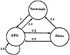
FIGURE 6.4 State transition diagram for a Markov model.
Transition matrices have also been used to specify page reference locality. In this case, the matrix entries specify the probability of the program referencing page (or module) i after referencing page (or module) j.
The transition probabilities give a more accurate picture of the order of requests than the frequency of requests. Given the same relative frequency of requests of different types, it is possible to realize the frequency with several different transition matrices. Each matrix may result in a different performance of the system. Therefore, in some cases it is important to measure the transition probabilities directly on the real system and to represent them in the workload model.
| Next Packet | ||
| Current | ||
| Packet | Small | Large |
| Small | 0.75 | 0.25 |
| Large | 1 | 0 |
| Previous | Table of Contents | Next |
){kind=link}
){kind=link}
){kind=link}
){kind=link}